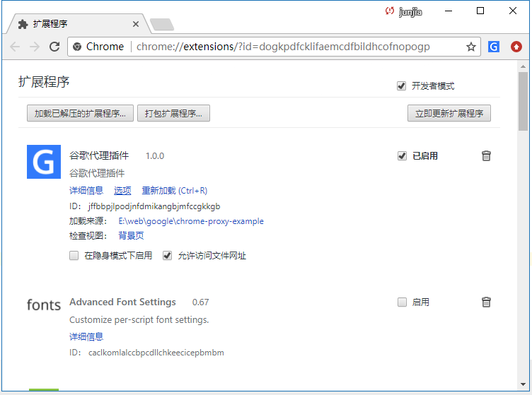
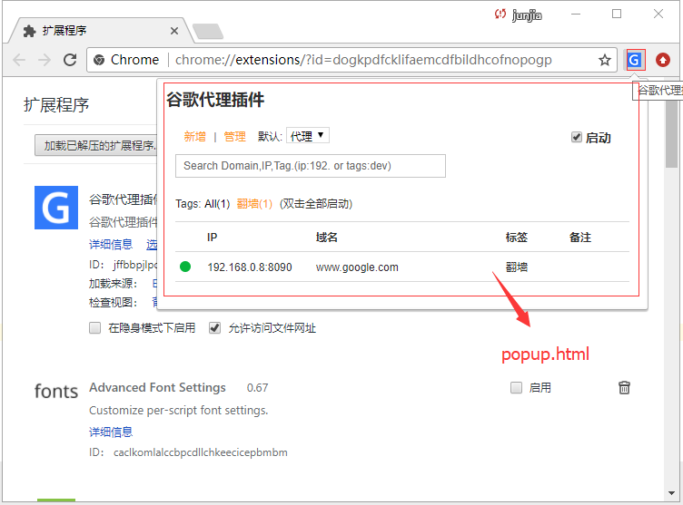
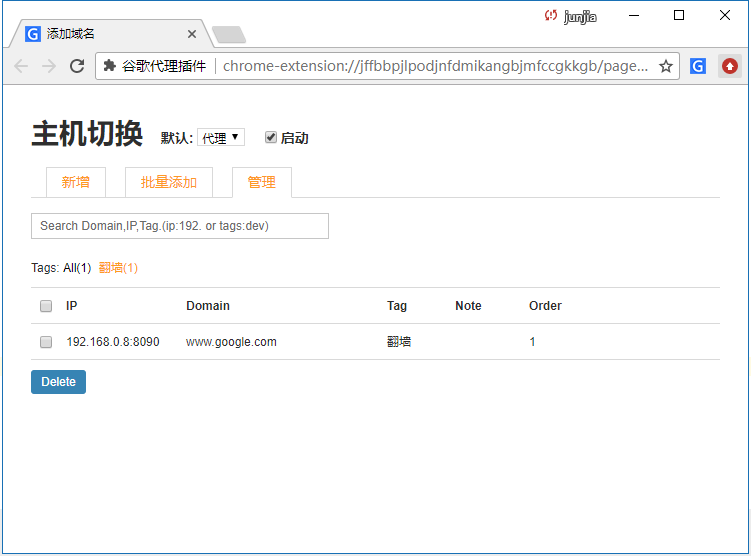
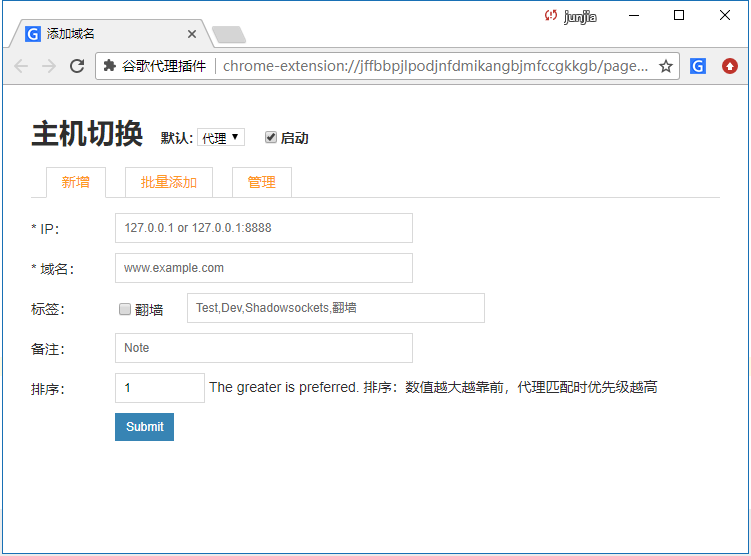
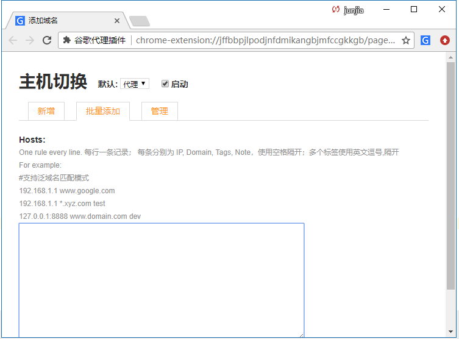
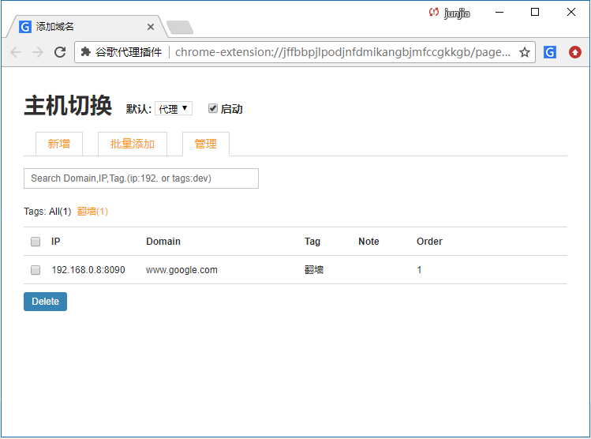

Chrome浏览器插件-代理插件开发
Chrome浏览器插件-代理插件开发
现在流行的谷歌浏览器代理插件有很多，大部分插件已具备自定义添加代理服务器功能，比如：自定义黑名单，白名单，全局代理等。而这一部分都需要用户主动配置，过于繁琐。如果你公司有墙的业务需求，而且不需要用户过多的配置，只需要安装插件到浏览器即可，以下插件很适合你解决用户主动配置的需求。
解决方案：
- 部署代理服务器，且配置白名单。
- Chrome浏览器插件增加默认域名配置。
- 每隔一段时间，自动更新服务器上的域名配置。
知识储备
- chrome插件开发
- 一门服务端语言 [PHP\PYTHON\JAVA..],用于接口调用
- 部署代理服务器 [squid]
开发
- 谷歌浏览器扩展页面截图

- 插件冒泡页面(popup.html)截图

- 插件管理页面(options.html)截图




项目目录结构
├─manifest.json……………………………………………………………………入口文件
├─README.md……………………………………………………………………说明文档
├─pages……………………………………………………………………页面
│ ├─options.html……………………………………………………………………操作页面
│ └─popup.html……………………………………………………………………启动页面
├─css…………………………………………………………………… css样式文件
├─icons…………………………………………………………………… 图标文件
├─js…………………………………………………………………… js文件
│ ├─background.js……………………………………………………………………背景页js
│ ├─config.js……………………………………………………………………配置文件
│ ├─option.js……………………………………………………………………操作处理
│ ├─model.js……………………………………………………………………模块
│ ├─pop.js……………………………………………………………………操作处理
│ └─script.js……………………………………………………………………响应js
└─libs…………………………………………………………………… 库文件
主要代码
manifest.json
每一个扩展、可安装的WebApp、皮肤，都有一个JSON格式的manifest文件，叫manifest.json，里面提供了重要的信息 。
{
"manifest_version": 2, // 2012年底强制只支持版本2
"name": "谷歌代理插件", // 用来标识扩展的简短纯文本
"description": "谷歌代理插件", // 描述
"minimum_chrome_version": "22", // 扩展，app或皮肤需要的chrome的最小版本
"version": "1.0.0", // 版本号
// 一个或者多个图标来表示扩展
"icons": {
"16" : "icons/icon_16.png",
"128" : "icons/icon_128.png"
},
// 注册背景页
"background": {
"scripts": [
"js/config.js",
"js/background.js"
]
},
"options_page": "pages/option.html", // 选项页
// Content scripts是在Web页面内运行的javascript脚本
"content_scripts": [{
"exclude_globs": [ ],
"include_globs": [ "*" ],
"js": [ "/libs/jquery.min.js", "/js/script.js" ],
"matches": [ "http://*/*", "https://*/*" ],
"run_at": "document_start",
"all_frames": false
}],
// 为缓解潜在的大规模的跨站点脚本攻击问题
"content_security_policy": "script-src 'self' 'unsafe-eval'; object-src 'self'",
// 用 browser actions 可以在chrome主工具条的地址栏右侧增加一个图标。
"browser_action": {
"default_icon": "icons/icon_16.png",
"default_title": "谷歌代理插件",
"default_popup": "pages/popup.html"
},
// 扩展或app将使用的一组权限
"permissions": [
"proxy",
"tabs",
"webRequest",
"webRequestBlocking",
"storage",
"tabs",
"http://*/*",
"https://*/*",
"<all_urls>"
]
}
背景页
扩展常常用一个单独的长时间运行的脚本来管理一些任务或者状态
manifest.json 中的配置
...
...
"background": {
"scripts": [
"js/config.js",
"js/background.js"
]
},
config.js
插件默认的配置文件，同时也可以通过接口更新。
config_porxy = [{
'id': Number(0),
'ip': "192.168.0.8:8090",
'domain': "www.google.com",
'note': "",
'tags': ["翻墙"],
'status':1,
'order': 1,
'uptime': ""
}]
background.js
background.js 主要功能，首次读取配置文件，每隔时间段调用API获取最新配置信息。根据配置信息调用Google代理接口，
var enableHosts = [];
chrome.webRequest.onCompleted.addListener(function (details) {
setTimeout(function(){
details.req = 'showip';
details.hosts = enableHosts;
chrome.tabs.sendRequest(details.tabId, details, function (response) {
console.log('res:', response);
});
},1000);
}, {
urls: [ 'http://*/*', 'https://*/*' ],
types: [ 'main_frame' ]
});
chrome.extension.onRequest.addListener(function(request, sender, sendResponse) {
enableHosts = request;
});
/**
* 标签更新
*/
chrome.tabs.onUpdated.addListener(function(tabId,changeInfo,tab){
});
// 设置配置
init()
clearInterval();
setInterval(function () {
init()
},300000)
function init(){
var version = loadData('version');
var hosts = getHosts();
if(hosts == null || hosts.length == 0){
config_porxy.forEach(function (s,e) {
addHost(s,true);
})
}else{
var xhr = new XMLHttpRequest();
xhr.open("GET", "https://cjjmem.github.io/page/json/google.json?version="+ version, true);
xhr.onreadystatechange = function() {
if (xhr.readyState == 4) {
var responseData = eval('('+ xhr.response + ')');
saveData('version',responseData.version+"chi")
if(responseData.data.length ==0){
return
}
var hostsData = [];
hosts.forEach(function (t) {
hostsData.push(t.domain)
})
responseData.data.forEach(function (t) {
var index = hostsData.indexOf(t.domain)
// 判断是否新增
if(index == -1){
addHost(t,true);
}else{
// 判断域名是否相同,不相同则修改
if(t.ip != hosts[index].ip){
updateHost(hosts[index],t);
}
}
})
}
}
xhr.send();
}
}
/**
* 原生js请求
* @param url
* @param callback
*/
function getJSONP( url, callback ){
var cbnum = "cb" + getJSONP.counter++;
var cbname = "getJSONP." + cbnum;
if( url.indexOf( "?" ) === -1 ){
url += "?jsonp=" + cbname;
}else{
url += "&jsonp" + cbname
}
var script = document.createElement( "script" );
// 回调函数
getJSONP[cbnum] = function( response ){
try{
callback( response );
}finally{
delete getJSONP[num];
script.parentNode.removeChild( script );
}
};
script.src = url;
document.body.appendChild( script );
}
getJSONP.counter = 0;
function saveData(name, value) {
localStorage[name] = JSON.stringify(value);
refreshDataForBk();
}
function loadData(name) {
var s = localStorage[name];
if (s) {
try {
return JSON.parse(s);
} catch (e) {
}
}
return false;
}
//添加主机
function addHost(info, enable) {
var hosts = loadData('hosts');
var c = loadData('hosts-count');
if (!c) {
c = 0;
}
if (!hosts) {
hosts = {};
}
var id = 1 + c;
info.status = 0;
info.id = id;
saveData('hosts-count', id);
hosts[id] = info;
saveData('hosts', hosts);
//自动启动
if( enable ) enableHostsBg([id]);
reload();
}
function enableHostsBg(ids) {
var hosts = loadData('hosts');
for (var i = 0; i < ids.length; i++) {
if (hosts[ids[i]]) {
hosts[ids[i]].status = 1;
}
}
saveData('hosts', hosts);
reload();
}
var last_callback_ip=false;
var last_callback_domain=false;
function uniq_arr(arr,key){
var dic={}
for(var i=0;i<arr.length;i++){
var t=arr[i];
dic[t[key]]=t;
}
var j=0;
arr.length=0;
for(var k in dic){
if(dic.hasOwnProperty(k)){
arr.push(dic[k]);
j++;
}
}
return arr;
}
var ips=[];
var domains=[];
function loadsIp(){
var hosts= loadData('hosts');
ips.splice(0,ips.length);
for(var i in hosts){
ips.push({ip: hosts[i].ip });
domains.push({domain:hosts[i].domain});
}
uniq_arr(ips,'ip');
uniq_arr(domains,'domain');
if(last_callback_ip){
last_callback_ip(ips);
}
if(last_callback_domain){
last_callback_domain(domains);
}
}
/**
* 设置自动IP
* @param callback
*/
function setAutoIp(callback){
callback(ips);
last_callback_ip=callback
}
/**
* 设置自动Domain
* @param callback
*/
function setAutoDomain(callback){
callback(domains);
last_callback_domain=callback
}
/**
* 设置浏览器本地缓存
* @param name
* @param value
*/
function saveData(name, value) {
localStorage[name] = JSON.stringify(value);
refreshDataForBk();
}
/**
* 刷新
* @param do_off
*/
function refreshDataForBk(do_off){
chrome.extension.sendRequest(do_off ? [] : getEnabledHosts(), function(data){
// do Something;
});
}
//重新加载
function reload(){
setStatus(true);
}
function getDefaultMode(){
return loadData('default_mode') ? loadData('default_mode') : 'DIRECT';
}
/**
* 获取主机
*/
function getHosts () {
var result = []
var hosts = loadData('hosts');
for (var id in hosts) {
if (hosts.hasOwnProperty(id)) {
result.push(hosts[id]);
}
}
return sortHostsResult(result);
}
/**
* 获取主机格式化
* @param result
* @returns {Array.<T>|*}
*/
function sortHostsResult (result){
return result.sort(function(x, y){
var a = Number(x.order),
b = Number(y.order);
return (isNaN(a) ? 1 : a) < (isNaN(b) ? 1 : b);
});
}
/**
* 获取开启主机列表
*/
function getEnabledHosts(){
var results=[];
var hosts=getHosts();
//别名问题
var map={};
var is_ip=new RegExp('([0-9]+\.)+[0-9]+');
var is_hostname=new RegExp('([^\. ]+)');//比如web1 web2 web-3 非域名
//别名记录
var host_alisa={};
var result_map={};
hosts.forEach(function(v,i){
if(v.status==1){
if(is_ip.test(v.ip) && is_hostname.test(v.domain)){
host_alisa[v.domain]= v.ip + '[@]' + v.id;
result_map[v.domain]= v.ip + '[@]' + v.id;
}
}
});
hosts.forEach(function(v,i){
if(v.status==1){
//使用了别名
if(!is_ip.test(v.ip) && is_hostname.test(v.ip) && host_alisa[v.ip]){
result_map[v.domain]=host_alisa[v.ip];
}else if( is_ip.test(v.ip)){
result_map[v.domain]= v.ip + '[@]' + v.id;
}else{
console.log('err:',i,v)
}
}
})
for(var d in result_map){
if(result_map.hasOwnProperty(d)){
var ip_id = result_map[d].split('[@]');
results.push({domain:d, ip:ip_id[0], id: ip_id[1]});
}
}
return sortHostsResult(results);
}
/**
* 更新主机
* @param info
*/
function updateHost(oldinfo,newinfo) {
var hosts = loadData('hosts');
oldinfo.status = 1;
var origin_status = newinfo.status;
hosts[oldinfo.id] = newinfo;
saveData('hosts', hosts);
if( origin_status ){
enableHostsBg([oldinfo.id]);
}
reload();
}
/**
* 移除主机
* @param id
*/
function removeHost(id) {
var hosts = loadData('hosts');
disableHosts(id);
delete hosts[id];
saveData('hosts', hosts);
reload();
}
/**
* 禁用域名
* @param ids
*/
function disableHosts(ids) {
var hosts = loadData('hosts');
for (var i = 0; i < ids.length; i++) {
if (hosts[ids[i]]) {
hosts[ids[i]].status = 0;
}
}
saveData('hosts', hosts);
reload();
}
/**
* 开关,启用暂停
* @param checked
* @param default_mode
*/
function setStatus(checked, default_mode) {
saveData('status',checked);
default_mode = default_mode || this.getDefaultMode();
saveData('default_mode', default_mode);
this.checked = checked;
var script = '';
if (this.checked) {
var results=getEnabledHosts();
for(var i =0;i<results.length;i++){
var info=results[i];
var ip = info.ip;
var port = 80;
if(info.domain.indexOf('*')!=-1){
script += '}else if(shExpMatch(host,"' + info.domain + '")){';
}else if(info.domain.indexOf(':')!=-1){
var t=info.domain.split(':');
port = t[1];
script += '}else if(shExpMatch(url,"http://' + info.domain + '/*") || shExpMatch(url,"https://' + info.domain + '/*")){';
}else{
script += '}else if(host == "' + info.domain + '"){';
}
if( info.ip.indexOf(':') > -1 ){
var ip_port = info.ip.split(':');
ip = ip_port[ip_port.length - 2];
port = ip_port[ip_port.length - 1];
}
script += 'return "PROXY ' + ip + ':'+ port +'; DIRECT";';
script+="\n";
}
var data='function FindProxyForURL(url,host){ \n if(shExpMatch(url,"http:*") || shExpMatch(url,"https:*")){if(isPlainHostName(host)){return "DIRECT";' +
script + '}else{return "'+ default_mode +'";}}else{return "SYSTEM";}}';
chrome.proxy.settings.set({
value: {
mode: 'pac_script',
pacScript: {
data:data
}
},
scope: 'regular'
}, function(){
// console.log('set pac scripts result:',arguments);
});
// $('#msg').html('set :' + script);
refreshDataForBk();
} else {
chrome.proxy.settings.set({
value: {
//mode: 'system'
// mode: 'direct'
mode: default_mode.toLowerCase()
},
scope: 'regular'
}, function () {
});
refreshDataForBk(true);
}
}